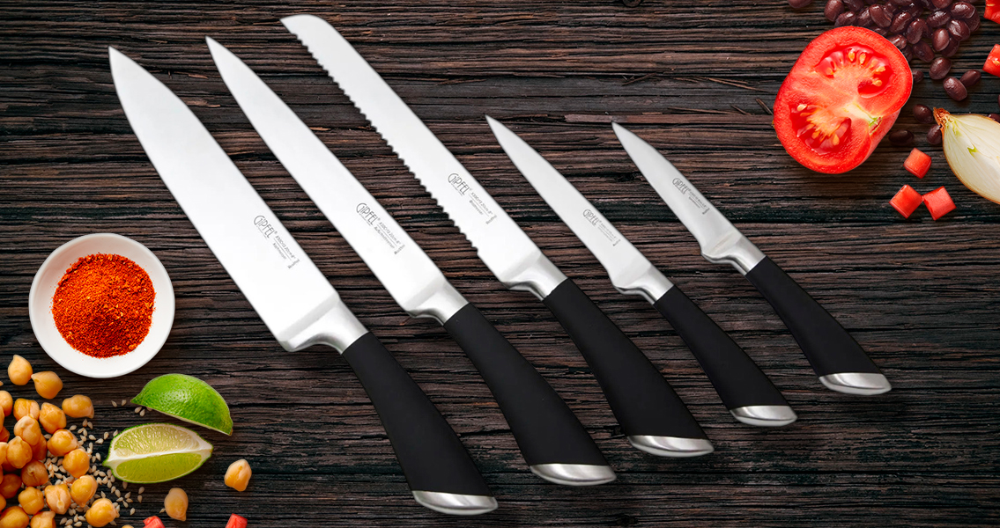
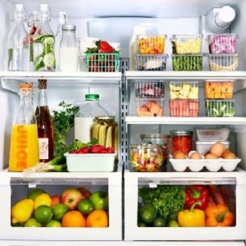
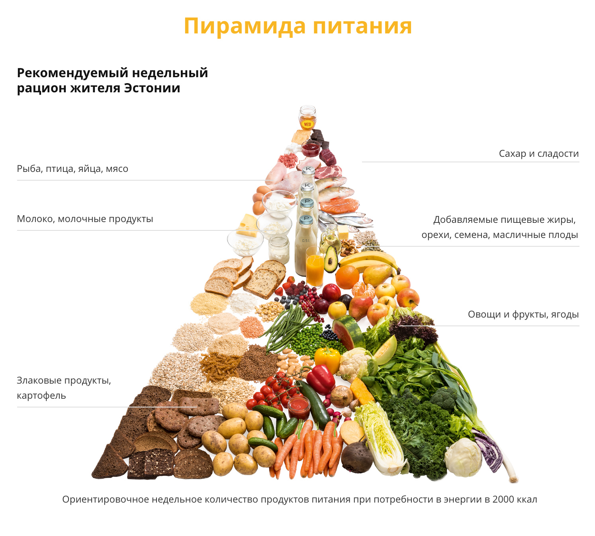

Кулинарные статьи и советы
 |
Разбираемся, какие ножи нужны на кухне: шеф, сантоку, для хлеба и овощей. Рассказываем, из какой стали лучше выбрать и как ухаживать за режущей кромкой, чтобы инструмент служил годами. |
 |
Как правильно хранить продукты Какие зоны в холодильнике холоднее, а какие теплее, где хранить мясо, молочные продукты и фрукты, чтобы они дольше оставались свежими и безопасными для употребления. |
 |
Секреты сбалансированного питания Основные принципы рационального питания, распределение белков, жиров и углеводов в течение дня, а также советы по составлению здорового меню на неделю. |